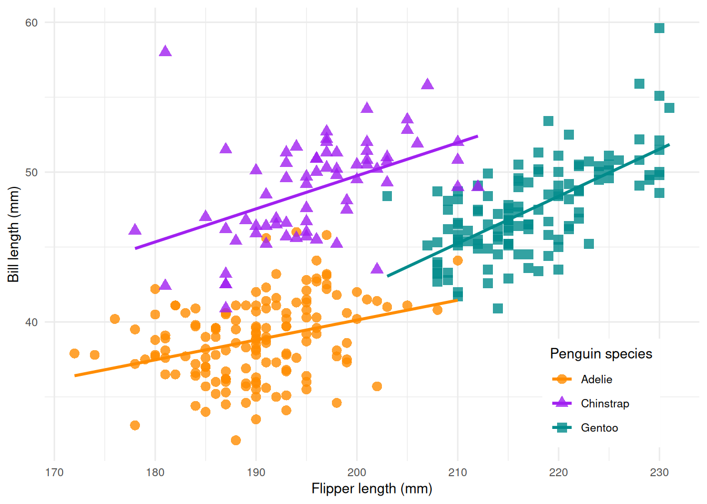

library(mlr3verse)Scope
In this post, we optimize the hyperparameters of a simple classification tree on the Palmer Penguins data set with only a few lines of code.
First, we introduce tuning spaces and show the importance of transformation functions. Next, we execute the tuning and present the basic building blocks of tuning in mlr3. Finally, we fit a classification tree with optimized hyperparameters on the full data set.
Prerequistes
We load the mlr3verse package which pulls the most important packages for this example. Among other packages, it loads the hyperparameter optimization package of the mlr3 ecosystem mlr3tuning.
In this example, we use the Palmer Penguins data set which classifies 344 penguins in three species. The data set was collected from 3 islands in the Palmer Archipelago in Antarctica. It includes the name of the island, the size (flipper length, body mass, and bill dimension), and the sex of the penguin.
tsk("penguins")<TaskClassif:penguins> (344 x 8): Palmer Penguins
* Target: species
* Properties: multiclass
* Features (7):
- int (3): body_mass, flipper_length, year
- dbl (2): bill_depth, bill_length
- fct (2): island, sexCode
library(palmerpenguins)
library(ggplot2)
ggplot(data = penguins, aes(x = flipper_length_mm, y = bill_length_mm)) +
geom_point(aes(color = species, shape = species), size = 3, alpha = 0.8) +
geom_smooth(method = "lm", se = FALSE, aes(color = species)) +
theme_minimal() +
scale_color_manual(values = c("darkorange","purple","cyan4")) +
labs(x = "Flipper length (mm)", y = "Bill length (mm)", color = "Penguin species", shape = "Penguin species") +
theme(
legend.position = c(0.85, 0.15),
legend.background = element_rect(fill = "white", color = NA),
text = element_text(size = 10))
Learner
We use the rpart classification tree. A learner stores all information about its hyperparameters in the slot $param_set. Not all parameters are tunable. We have to choose a subset of the hyperparameters we want to tune.
learner = lrn("classif.rpart")
as.data.table(learner$param_set)[, list(id, class, lower, upper, nlevels)] id class lower upper nlevels
<char> <char> <num> <num> <num>
1: cp ParamDbl 0 1 Inf
2: keep_model ParamLgl NA NA 2
3: maxcompete ParamInt 0 Inf Inf
4: maxdepth ParamInt 1 30 30
5: maxsurrogate ParamInt 0 Inf Inf
6: minbucket ParamInt 1 Inf Inf
7: minsplit ParamInt 1 Inf Inf
8: surrogatestyle ParamInt 0 1 2
9: usesurrogate ParamInt 0 2 3
10: xval ParamInt 0 Inf InfTuning Space
The package mlr3tuningspaces is a collection of search spaces for hyperparameter tuning from peer-reviewed articles. We use the search space from the Bischl et al. (2021) article.
lts("classif.rpart.default")<TuningSpace:classif.rpart.default>: Classification Rpart with Default
id lower upper levels logscale
<char> <num> <num> <list> <lgcl>
1: minsplit 2e+00 128.0 TRUE
2: minbucket 1e+00 64.0 TRUE
3: cp 1e-04 0.1 TRUEThe classification tree is mainly influenced by three hyperparameters:
- The complexity hyperparameter
cpthat controls when the learner considers introducing another branch. - The
minsplithyperparameter that controls how many observations must be present in a leaf for another split to be attempted. - The
minbuckethyperparameter that the minimum number of observations in any terminal node.
We argument the learner with the search space in one go.
lts(lrn("classif.rpart"))<LearnerClassifRpart:classif.rpart>: Classification Tree
* Model: -
* Parameters: xval=0, minsplit=<RangeTuneToken>, minbucket=<RangeTuneToken>, cp=<RangeTuneToken>
* Packages: mlr3, rpart
* Predict Types: [response], prob
* Feature Types: logical, integer, numeric, factor, ordered
* Properties: importance, missings, multiclass, selected_features, twoclass, weightsTransformations
The column logscale indicates that the hyperparameters are tuned on the logarithmic scale. The tuning algorithm proposes hyperparameter values that are transformed with the exponential function before they are passed to the learner. For example, the cp parameter is bounded between 0 and 1. The tuning algorithm searches between log(1e-04) and log(1e-01) but the learner gets the transformed values between 1e-04 and 1e-01. Using the log transformation emphasizes smaller cp values but also creates large values.
lts("classif.rpart.default")<TuningSpace:classif.rpart.default>: Classification Rpart with Default
id lower upper levels logscale
<char> <num> <num> <list> <lgcl>
1: minsplit 2e+00 128.0 TRUE
2: minbucket 1e+00 64.0 TRUE
3: cp 1e-04 0.1 TRUETuning
The tune() function controls and executes the tuning. The method sets the optimization algorithm. The mlr3 ecosystem offers various optimization algorithms e.g. Random Search, GenSA, and Hyperband. In this example, we will use a simple grid search with a grid resolution of 5. Our three-dimensional grid consists of \(5^3 = 125\) hyperparameter configurations. The resampling strategy and performance measure specify how the performance of a model is evaluated. We choose a 3-fold cross-validation and use the classification error.
instance = tune(
tuner = tnr("grid_search", resolution = 5),
task = tsk("penguins"),
learner = lts(lrn("classif.rpart")),
resampling = rsmp("cv", folds = 3),
measure = msr("classif.ce")
)The tune() function returns a tuning instance that includes an archive with all evaluated hyperparameter configurations.
as.data.table(instance$archive)[, list(minsplit, minbucket, cp, classif.ce, resample_result)] minsplit minbucket cp classif.ce resample_result
<num> <num> <num> <num> <list>
1: 2.7764798 2.087194 -2.302585 0.06107297 <ResampleResult[21]>
2: 1.7348135 4.174387 -2.302585 0.18001526 <ResampleResult[21]>
3: 0.6931472 1.043597 -9.210340 0.02906178 <ResampleResult[21]>
4: 0.6931472 3.130790 -9.210340 0.06107297 <ResampleResult[21]>
5: 2.7764798 3.130790 -4.029524 0.06107297 <ResampleResult[21]>
---
121: 3.8181461 0.000000 -5.756463 0.04065599 <ResampleResult[21]>
122: 0.6931472 0.000000 -7.483402 0.02616323 <ResampleResult[21]>
123: 0.6931472 3.130790 -2.302585 0.06107297 <ResampleResult[21]>
124: 1.7348135 2.087194 -4.029524 0.04937707 <ResampleResult[21]>
125: 3.8181461 0.000000 -2.302585 0.06107297 <ResampleResult[21]>The best configuration and the corresponding measured performance can be retrieved from the tuning instance.
instance$result minsplit minbucket cp learner_param_vals x_domain classif.ce
<num> <num> <num> <list> <list> <num>
1: 0.6931472 0 -9.21034 <list[4]> <list[3]> 0.02616323The $result_learner_param_vals field contains the best hyperparameter setting on the learner scale.
instance$result_learner_param_vals$xval
[1] 0
$minsplit
[1] 2
$minbucket
[1] 1
$cp
[1] 1e-04Final Model
The learner we use to make predictions on new data is called the final model. The final model is trained on the full data set. We add the optimized hyperparameters to the learner and train the learner on the full dataset.
learner = lrn("classif.rpart")
learner$param_set$values = instance$result_learner_param_vals
learner$train(tsk("penguins"))The trained model can now be used to predict new, external data.
References
Bischl, Bernd, Martin Binder, Michel Lang, Tobias Pielok, Jakob Richter, Stefan Coors, Janek Thomas, et al. 2021. “Hyperparameter Optimization: Foundations, Algorithms, Best Practices and Open Challenges.” arXiv:2107.05847 [Cs, Stat], July. http://arxiv.org/abs/2107.05847.
Horst, Allison. 2022. “Palmer Penguins Artwork and Figures.” https://github.com/allisonhorst.